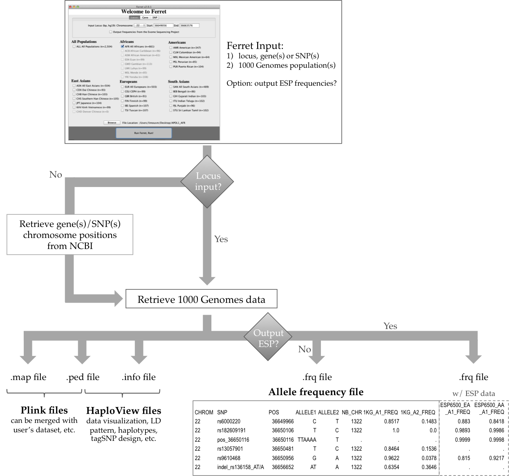

About Ferret
Ferret is a user-friendly tool to quickly extract human genetic variation data from the latest release of the 1000 Genomes (1KG) Project. Ferret was developed as a straightforward Java application to be accessible even for non-specialists who are not adept at the 1KG bioinformatics tools. By converting the 1KG vcf files to a format that can be read by popular pre-existing tools (e.g. Plink and HaploView), Ferret offers easy manipulation and visualization of the 1KG SNP and indel data, easy access to allelic frequency, linkage disequilibrium and haplotype information, and eventually tagSNP design.
What does Ferret do?

*1KG, 1000 Genomes; ESP, Exome Sequencing Project; LD, linkage disequilibrium; CHROM, chromosome; POS, position; NB_CHR, number of chromosomes; A1, allele 1; A2, allele 2; FREQ, frequency.
Ferret unique features:
- Can extract data from a locus, from a gene or gene list, or from a variant ID or a variant list
- Converts 1KG SNP and indel data
- Computes allelic frequency for 1KG SNP, indel and CNV variants
- Retrieves allelic frequency for the Exome Sequencing Project variants
- Creates output files suitable for popular pre-existing tools (e.g. Plink and HaploView)
- User-friendly interface
Contact
Developed by Sophie Limou (@limousophie35) and Andrew Taverner: ferret@nih.gov.
Citation
Limou S, Taverner A, Nelson G, Winkler CA. Ferret: a user-friendly Java tool to extract data from the 1000 Genomes project. Poster 1718T presented at the Annual meeting of the American Society of Human Genetics (ASHG), 2015, Baltimore MD, USA (Download Poster).
Download Ferret
Ferret’s only pre-requisite is to have Java JRE 8 installed on your computer. In addition, Ferret requires Java JDK 8 to retrieve allelic frequencies from the Exome Sequencing Project.
For queries from a Terminal console and for integration into pipelines, we also provide Ferret perl script and Java source code.
Version history
2015, August 12
This new version was presented at the ASHG 2015 meeting and includes several new features:
- Retrieves 1KG data from a locus, gene(s), or SNP(s) of interest,
- Displays allelic frequency for CNVs (in addition to SNPs and indels),
- Retrieves allelic frequency from the Exome Sequencing Project.
2013, October 23
This initial version corresponds to the version presented at the ASHG 2013 meeting, allowing to retrieve 1KG data from a locus of interest.
FAQ
- How to report a bug or ask a question?
- Which Java version does Ferret require to run on my computer?
- Which Ferret version do I have on my computer? How do I get the latest Ferret update?
- Ferret is not working: nothing is happening when hitting the ‘Run’ button.
- How can I get Ferret to run on a Linux/Ubuntu environment?
- I’m getting an error when trying to retrieve allelic frequencies from the Exome Sequencing Project. Why?
- How do I get the allelic frequencies in two different populations?
- How do I input more than one gene?
- How do I input more than one SNP?
- What can I do with the output files?
- In the .frq file, what do the 1KG_A1_FREQ and 1KG_A2_FREQ fields correspond to?
- In the .frq file, what do the ESP6500_EA_A1_FREQ and ESP6500_EA_A1_FREQ fields correspond to?
- Why do I get more SNPs in the output files than input in the SNP tab?
- Why do I get CNV information in the .frq file and not in the Plink/HaploView files?
- Why do the indels appear as A/T SNP in Plink/HaploView?
- Why are the gene coordinates different from the 1000 Genomes browser?
1. How to report a bug or ask a question?
First, make sure that you have the latest version installed on your computer (see #2 and 3). Then, please check carefully the website and FAQ to be sure that your problem was not already solved. Finally, you can send us an email (ferret@nih.gov) with as much detail as possible (including your operating system and Java versions), and we’ll do our best to answer you in a timely manner.
2. Which Java version does Ferret require to run on my computer?
Ferret’s only pre-requisite is to have Java JRE 8 installed on your computer. In addition, if you are interested in querying the Exome Sequencing Project, be sure to also install Java JDK 8. The Java installations require administrative privileges.
For Linux/Ubuntu users, the Java JRE/JDK installation can be tricky but you can find help online from the active Linux community (like here for Debian Linux, which includes Ubuntu).
3. Which Ferret version do I have on my computer? How do I get the latest Ferret update?
To know the version of Ferret installed on your computer, just launch Ferret and the version number will appear in the window title (e.g. Ferret v2.0.1).
Every time you restart Ferret, the software will automatically check our website for any update and a window will pop-up if any ‘minor’ or ‘critical’ update was posted, inviting you to download the latest version.
4. Ferret is not working: nothing is happening when hitting the ‘Run’ button.
Please make sure that your Internet connection is working properly, as Ferret needs to connect to the 1000 Genomes ftp and/or NCBI servers. Both servers are extensively accessed everyday all over the world, so please try again later to ensure that the problem does not come from overuse of NCBI and/or 1000 Genomes servers, rather than from Ferret itself. If the problem persists, do not hesitate to contact us (see #1) and indicate if a temporary .vcf file is created in the output folder.
5. How can I get Ferret to run on a Linux/Ubuntu environment?
If double-clicking the Ferret.jar file does not work, launch Ferret from a terminal window by typing the following command line: java –jar Path/to/Ferret.jar. If the problem persists, do not hesitate to contact us (see #1) and along with your Linux distribution, indicate the outputs generated from the following commands: java –version and javac –version.
6. I’m getting an error when trying to retrieve allelic frequencies from the Exome Sequencing Project. Why?
Be sure that you have Java JRE and JDK installed (see #2). If the problem persists, do not hesitate to contact us (see #1) and indicate whether a temporary file called evsClient0_14.jar is created in the same folder Ferret.jar is installed in.
7. How do I get the allelic frequencies in two different populations?
The allelic frequencies information is summarized in the .frq file (see #10).
If you are interested in the allelic frequencies in the combined group of two 1000 Genomes reference populations (e.g. CEU + TSI), just select simultaneously the two populations as input.
If you want to access the data from two populations independently (e.g. CEU and TSI separately), you will have to run two independent queries in Ferret (aka, first on CEU, and second on TSI).
8. How do I input more than one gene?
You have two options:
1. You can enter manually the list of genes separated by a comma in the input box;
2. You can load a comma-delimited .csv, a tab-delimited .tab or .tsv, or a space-delimited .txt file containing the list of genes. A carriage return can also be used as a delimiter for all file types.
Important: do not forget to indicate if your input corresponds to gene name or gene ID.
9. How do I input more than one SNP?
You have two options:
1. You can enter manually the list of SNPs separated by a comma in the input box;
2. You can load a comma-delimited .csv, a tab-delimited .tab or .tsv, or a space-delimited .txt file containing the list of SNPs. A carriage return can also be used as a delimiter for all file types.
Important: indicate only the unique rs number without the letters ‘rs’ (e.g. 333 for rs333).
10. What can I do with the output files?
Ferret generates 4 output files:
.frq: list of all identified variants (SNPs, indels and CNV) along with chromosome, variant ID, hg19 chromosome position and alleles, as well as allelic frequency in the input population(s) (see also #11 and #12). The variant ID corresponds to the rs number when available, and to the hg19 chromosome position when no rs number is reported (see also #15).
.map
.ped
.info
The .map, .ped and .info files allow you to open, visualize and manipulate the genotype data with the popular Plink and HaploView tools. You can then easily access linkage disequilibrium and haplotype information for the 1000 Genomes SNPs and indels, merge the 1000 Genomes data with your own datasets, design tagSNPs, etc.
11. In the .frq file, what do the 1KG_A1_FREQ and 1KG_A2_FREQ fields correspond to?
For each variant, the 1KG_A1_FREQ and 1KG_A2_FREQ fields correspond to the allelic frequency in the input population(s) for allele 1 and allele 2, respectively.
If you have selected to output the allelic frequencies from the Exome Sequencing Project (ESP) as well (see #12), only the 1KG_A1_FREQ field will appear in the .frq file.
12. In the .frq file, what do the ESP6500_EA_A1_FREQ and ESP6500_EA_A1_FREQ fields correspond to?
These fields only appear in the .frq file if you selected to output Exome Sequencing Project (ESP) frequencies. For each variant, the ESP6500_EA_A1_FREQ and ESP6500_AA_A1_FREQ fields correspond to allele 1 frequency in the European American and African American ESP6500 datasets, respectively. The last ESP release is based on 6500 US individuals, including 4300 European Americans and 2203 African Americans (for more details, see the ESP website). ESP only provides allele and genotype counts, and does not provide genotype data: as a consequence, the Plink/HaploView files only contain the 1000 Genomes Project data.
13. Why do I get more SNPs in the output files than input in the SNP tab?
If you input a variant, it is possible to get more than one variant in the output files if your SNP of interest is overlapping with another variant (e.g. indel or CNV). Alternatively, you can get more variants if you elect to include surrounding variants in a certain base-pair window range around your SNP of interest.
14. Why do I get CNV information in the .frq file and not in the Plink/HaploView files?
Plink and HaploView do not support CNV data. However, we included CNV information in the .frq file, as it can be useful when studying a region of interest (e.g. for primer design).
15. Why do the indels appear as A/T SNPs in Plink/HaploView?
Plink and HaploView do not support indels. We transformed the small indels into A/T SNPs so Plink and HaploView can read them. To get the allele correspondence, report to the variant ID: the first allele corresponds to A when the second allele corresponds to T (e.g. indel_rs136158_AT/A for rs136158, where the first allele AT has been transformed in A, and the second allele A has been transformed in T).
The indel representation follows the vcf format coding where AT/A corresponds to a T/- deletion, and C/CA corresponds to a -/A insertion.
16. Why are the gene coordinates different from the 1000 Genomes browser?
For gene coordinates, Ferret queries the curated and non-redundant NCBI’s RefSeq database, when the 1000 Genomes browser is based on the Ensembl human gene annotations. The coordinates reported in these two databases are greatly overlapping, however some minor discrepancies can still occur.